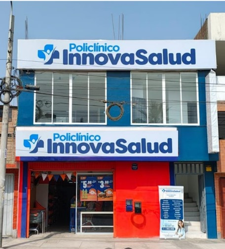

+
Consultas médicas
Evaluación presencial con profesionales de distintas especialidades.
Conocer especialidades → Urgencias · 106
Urgencias · 106
Atención médica integral, profesionales capacitados y servicios pensados para acompañarte en cada etapa.

Accede a atención médica, laboratorio y orientación sin complicaciones.
Evaluación presencial con profesionales de distintas especialidades.
Conocer especialidades →Consulta tus resultados mediante tu DNI y código de atención.
Consultar resultados →Información clara sobre horarios, sede y canales de atención.
Ver ubicación →Completa tus datos y confirma la información antes de registrar la cita.
Revisa los datos antes de registrar la solicitud.